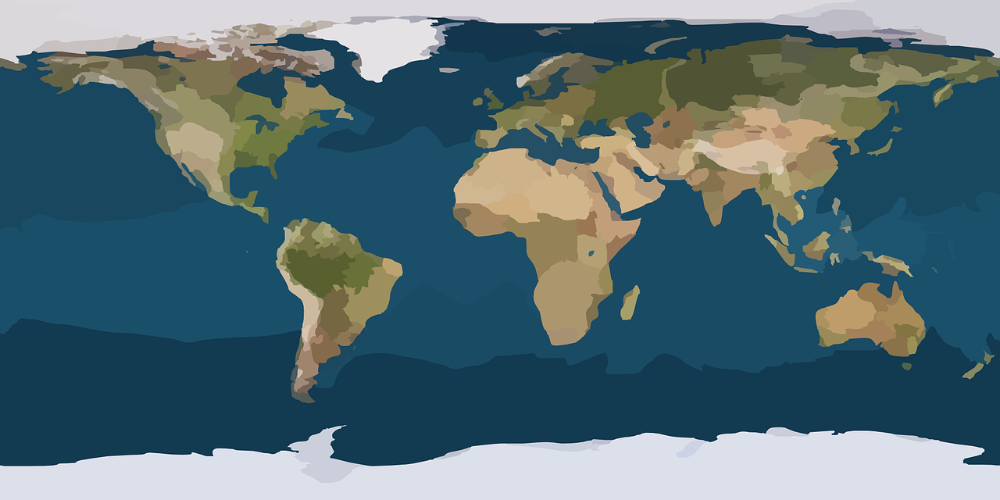

My favorite references for ecology, GIS, R, and more.

Created by: Benjamin Tjepkes
Last updated: November 14, 2023
This page contains a repository of technical tutorials, personal blogs, eBooks, and other websites that I find myself consistently referring back to for my technical works.
Resource Database
Use the filter/search options below to explore my collated resources. Items have been loosely categorized by topic and type of content. Please reach out with any suggestions, edits, or questions.